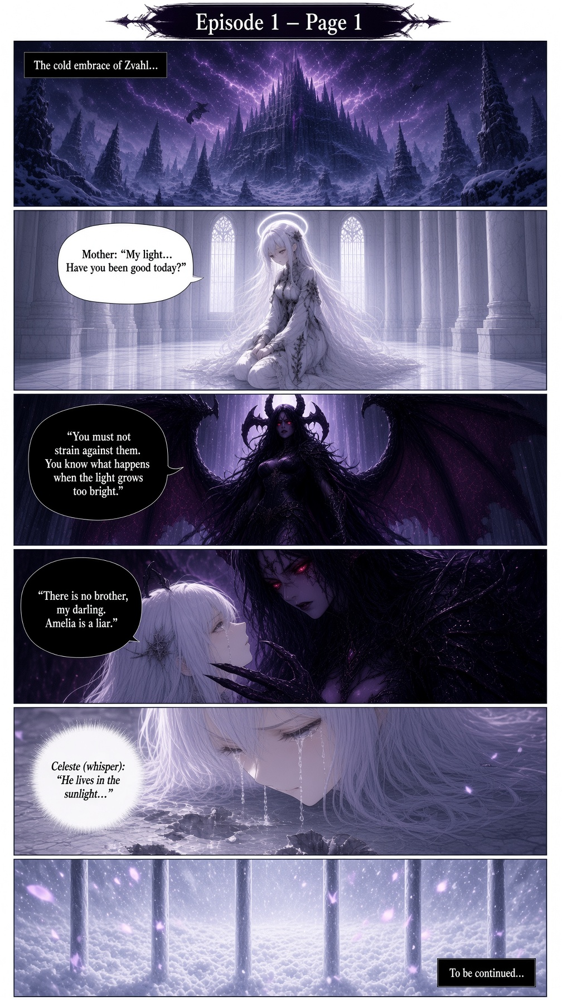
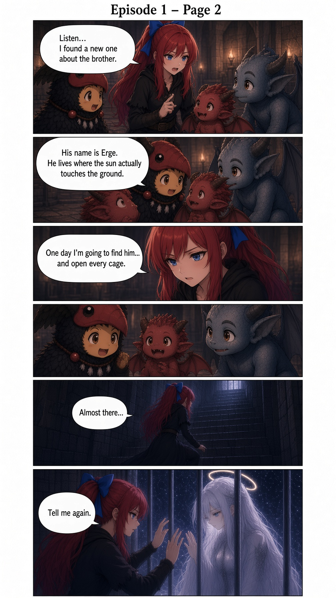
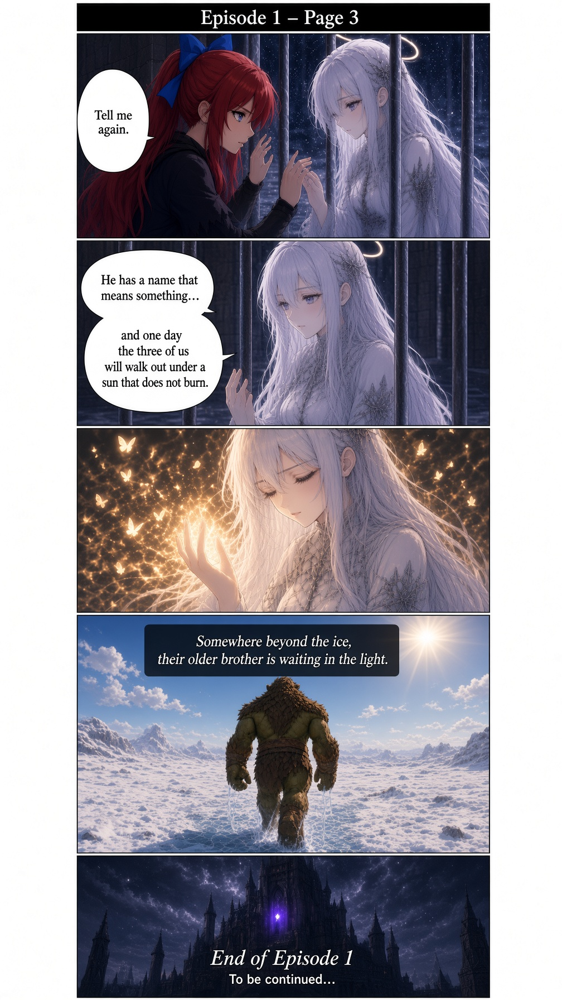

In the frozen heart of Castle Zvahl, where the sky itself seems to bleed violet lightning, a girl of pure light is kept in a gilded cage.
Her name is Celeste. Every day her mother—once Cornelia, now something darker—asks the same question with a smile that never reaches her eyes:
“My light… Have you been good today?”
The bars are not only iron. They are wards, carefully woven to smother the radiance that leaks from Celeste’s skin. When the light grows too bright, the mother reminds her of the consequences. And always, always, the same lie is repeated:
“There is no brother, my darling. Amelia is a liar.”
Celeste’s tears fall onto the stone floor. In a voice almost too quiet to hear, she answers the only truth she still believes:
“He lives in the sunlight…”
Far below, in the lower halls where the lesser demons gather, Amelia Firesped sits among her unlikely friends—a small red imp, a blue-skinned gargoyle-kin, and a feathered misfit. She leans in, eyes bright with the only hope the castle has not yet crushed.
“Listen… I found a new one about the brother.”
“His name is Erge. He lives where the sun actually touches the ground.”
The little demons listen, wide-eyed. Amelia’s voice softens, but the steel underneath remains.
“One day I’m going to find him… and open every cage.”
She leaves them with that promise and climbs the long, cold stairs toward the only other person in the world who still believes it too.
“Almost there…”
Behind the bars, Celeste waits. Amelia presses her hands to the cold iron.
“Tell me again.”
Celeste’s fingers meet hers through the gaps. For a moment the darkness of Zvahl feels a little less absolute.
“He has a name that means something… and one day the three of us will walk out under a sun that does not burn.”
Golden light blooms between them—soft, defiant, impossible. Butterflies of pure aether rise into the air as if the castle itself has forgotten, just for a heartbeat, that such things are not allowed here.
Somewhere beyond the ice, their older brother is waiting in the light.
End of Episode 1